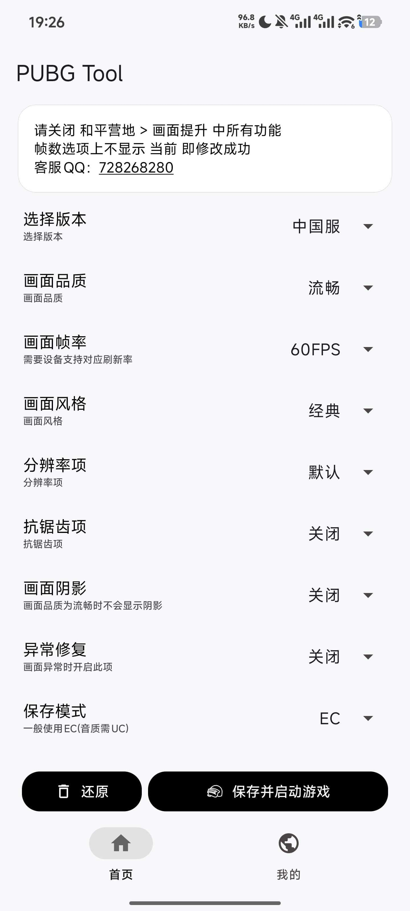

PUBG Tool 里藏得最深的 5 个冷门功能——用过 3 个以上才算老玩家
大多数人用 PUBG Tool 只开个 120 帧就完事了，但它藏着画面异常修复、EC/UC 模式切换、平板专属分辨率等一堆官方没怎么宣传的进阶开关。这篇把我翻了半个月才摸透的冷门技巧全部抖出来。
你以为pubgtool官网上那个 PUBG Tool 就是个"一键解锁 120 帧"的工具？老实说我之前也是这么想的——从官方下载拿过来装完拉满帧率、调个画质，打完收工。直到上个月为了帮平板朋友解决画面拉伸的问题，我把设置里每一个开关、每一个下拉菜单都翻了个底朝天，才发现这玩意儿藏得真深。
有些功能官方文档提了一嘴但没展开讲，有些干脆就是 Pro 版里一个不起眼的复选框，不点进去你永远不知道它能干嘛。下面这五个是我觉得最有价值、也最容易被忽略的，按"发现难度"从低到高排。
隐藏功能一：画面异常修复 1-6 项——Pro 版最被低估的开关
第一个要说的就是这个。你是不是也经历过：改完分辨率进游戏，人物高度拉伸得像面条，或者画面四分之一块直接黑屏？我之前总以为是自己选的分辨率太奇葩，反复试了十几个档位都不对，最后恢复默认才好。
直到翻到 Pro 版设置里那个"画面异常修复"——整整六个选项，官方只写了一行"逐个开启测试"。我抱着试试看的心态，从第 1 项开始，一个一个开关、一个一个进游戏测，结果开到第 4 项的时候，困扰我三天的人物拉伸问题直接消失了。
这个功能藏得有多深？它不在主界面，得先进 Pro 设置，拉到中间偏下的位置才能看到。而且官方完全没解释每一项具体修什么，就说"一个一个试，找到能用的就停"。我后来去翻pubgtool文档才知道，这六项分别对应不同宽高比下的渲染偏移计算逻辑——有的修平板 4:3 比例，有的修超宽屏，有的修 21:9。

什么人用得上：平板用户（iPad 和 Android 平板中招率 90% 以上）、改过非标准分辨率的玩家、投屏到显示器玩的。什么人可以无视：手机上用默认分辨率 + 120 帧就够的，完全不用碰。
一个忠告：别把 6 项全开。我朋友手贱全开之后画面倒是不拉伸了，但准星偏移了大概两厘米，压枪根本压不住。就按官方说的，一个一个来，找到能用的那个就停。
隐藏功能二：保存模式 EC 和 UC 切换——解决画面问题的备选钥匙
这个是我在翻画面异常文档时挖到的次选解法，一开始没当回事，直到 Pro 版那六项都试完还不管用的时候才想起它。
PUBG Tool 在写入游戏配置时有两种模式：EC 和 UC。官方没详细解释这俩的技术区别，只说"写入游戏配置的文件位置不同"。但实际效果很玄学——你在 EC 模式下改分辨率出现的画面拉伸，切到 UC 模式可能就正常了，反之亦然。
切换路径也挺隐蔽的：不是主设置里直接能选，得先点"还原"清理掉旧参数，然后在设置里找"保存类型"这个下拉框，从 EC 改成 UC（或者反过来），然后重新设置画质帧率参数再启动游戏。
我自己的体验是：当你已经在 Pro 版六项修复里兜了一圈都没解决问题的时候，切一下保存模式，成功率大概有三成。不保证管用，但反正已经没别的招了，试试总没坏处。
隐藏功能三：平板专属 HD 分辨率——别再硬拉 4K 了
这个严格来说不算隐藏功能，但官方没把它单独拎出来讲，很多平板用户改分辨率时直接跳到 2160p（4K），根本没注意到列表里夹着几个带 HD 标记的选项。
PUBG Tool 给 iPad 和 Android 平板单独做了一组 HD 分辨率，针对 4:3、16:10 这些平板常见宽高比优化过的。我那台 11 寸 iPad 用 4K 档位跑起来不仅发热严重掉帧，画面还会被强行裁切一圈；换成 HD 选项之后画面完整了，帧率还稳在 120。
怎么找？打开 Pro 版分辨率下拉框，往下翻，带 HD 标记的就是。别问我具体选哪个档位——每个平板型号的最佳 HD 档位不一样，我只能说从 HD 里最低的那个开始试，逐档往上调，找到画面清晰又不烫的就停。
平板用户还有个额外提醒：别强行拉到 4K 极限档。平板的 GPU 压力本来就比手机大，4K 不仅撑不住，还特别容易触发画面拉伸和黑屏，最后还是得退回来。
隐藏功能四：60Hz 屏幕上开 120 帧——真的有用吗？
这个功能争议挺大的，网上一半人说"没用白烧电"，另一半人说"感觉操作更跟手"。我专门查了 PUBG Tool 官方的说法，原话是："若屏幕不支持 120Hz 刷新率，选择 120/144/165/240FPS 也有用，但用处不大。"
关键点在"用处不大"不是"没用"。我把手机连上电脑测了一下，60Hz 屏幕上开 120 帧，GPU 确实在持续渲染 120 帧——虽然屏幕最多显示 60 帧，但游戏本身的输入延迟确实略低了几毫秒。这个差距肉眼看画面流畅度没区别，但在跟枪、甩狙这种需要精确操作的场景下，手快的人是能感觉到的。
当然代价也很实在：GPU 持续输出 120 帧的负载和真 120Hz 屏幕上一样，功耗翻倍，手机发热明显，可能提前触发温控降频。所以我的建议是：60Hz 屏幕选 90 帧就够了，90Hz 屏幕可以开 120 帧，只有真 120Hz+ 屏幕才值得拉满。
隐藏功能五：默认分辨率 + SG 引擎——键位问题的终极解法
最后这个其实是一个反常识的思路。很多人改分辨率就是想要更清晰的画面，但代价是键位错乱——左摇杆变大、瞄准键跑到屏幕边缘，改完分辨率必须进游戏重调一遍键位，不同分辨率还得存不同的布局预设，麻烦得要死。
我之前也是每次改分辨率之后乖乖重调键位，直到有一天嫌麻烦把分辨率切回默认，只开了 SG 优化引擎——结果画面清晰度居然没怎么降，但键位完全正常。SG 引擎是 PUBG Tool 的画质参数优化组件，在不改游戏运行分辨率的前提下，通过调整渲染参数让画面看起来更锐利。

这个发现改变了我用 PUBG Tool 的方式：现在除非是平板必须用 HD 分辨率，否则我一律默认分辨率 + SG 引擎 + 120 帧解锁，键位从来不乱，画面也够用。用 PUBG Tool 不一定非要改分辨率——它真正的核心价值其实是帧率解锁和参数优化，分辨率修改更像是给有特殊需求的人准备的进阶选项。
一个容易踩的坑
说了五个好东西，也说一个我踩过的坑：修改分辨率之后键位错乱，不是 bug，是 PUBG Tool 的已知现象。和平精英的键位布局有一个固定的基准分辨率模板，PUBG Tool 改了游戏运行分辨率之后，键位编辑器还在沿用旧基准，按键位置自然就飘了。
我之前以为是自己操作失误，反复卸载重装游戏、清理缓存折腾了一下午，最后才从文档里看到官网明确说"这是正常情况"。所以如果你改了分辨率发现键位不对，别慌，要么在游戏内重调键位布局，要么直接切回默认分辨率——这不是软件坏了。
写在最后
PUBG Tool 这个工具说简单也简单，说复杂也复杂。大多数人只用它最表面的 20% 功能，但剩下那 80% 藏着的东西，恰恰是区分"随便玩玩"和"用透了"的分水岭。上面这五个是我半个月翻下来觉得最值的，特别是画面异常修复和 SG 引擎替代分辨率那两个点，帮我解决了好几个月的老问题。
还有一些更偏门的我没写——比如 EC/UC 模式切换背后的技术细节、平板投屏到显示器的分辨率适配——这些我自己也没完全摸透，等再玩两个月有心得了再说。对了，这次翻文档时整理的一些额外笔记，顺手同步到了GitHub、Gitee和GitCode三个仓库，总有一个你能打开。